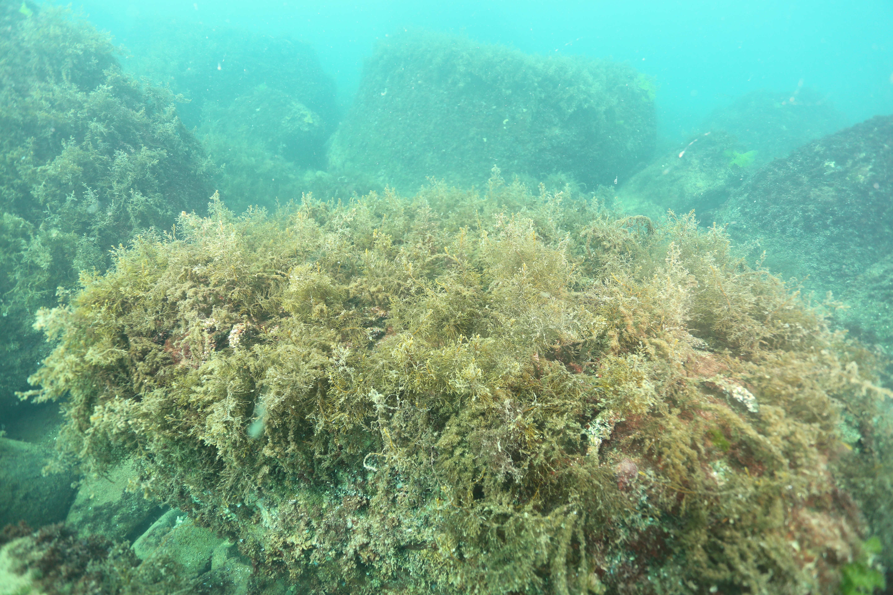

Aujourd'hui, les étals du marché sont bien remplis. Découvrons quelques produits !
Juteuse et sucrée, la mangue est le fruit du manguier, un arbre de la même famille que l'anacardier (l'arbre qui donne la noix de cajou).

Le maïs est une céréale. On le mange grillé, bouilli, ou en farine.

Rouge, ronde et pleine de graines : la tomate est partout dans nos sauces.

Les fèves de cacao se trouvent dans un gros fruit appelé cabosse, qui pousse
directement sur le tronc et les grosses branches du cacaoyer.

source: publier sur Wikispecies